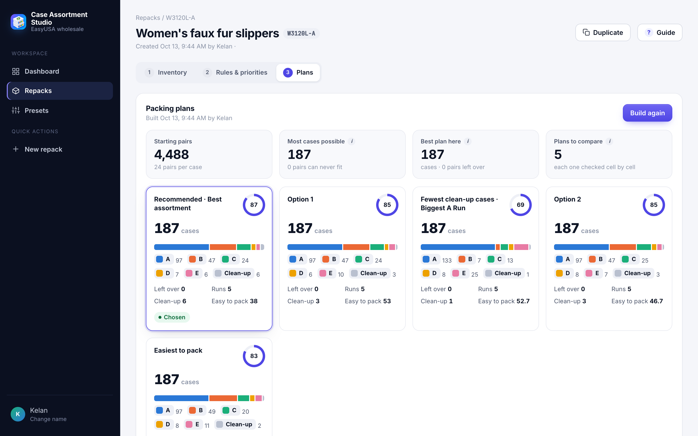
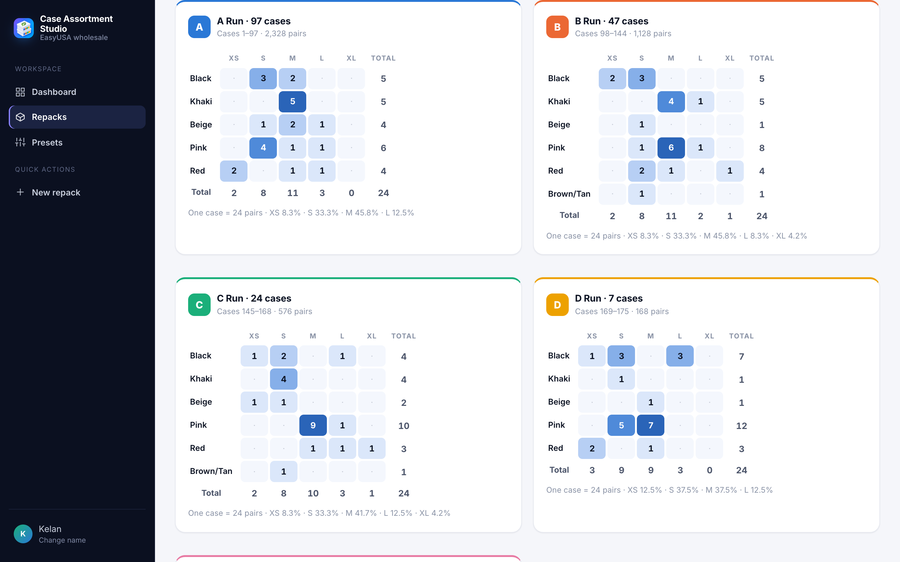
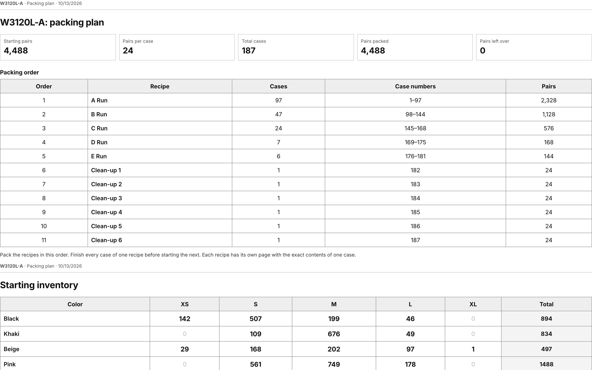

A warehouse problem I wanted to make easier
Easy USA sells shoes in fixed-quantity cases. Leftover stock, however, is split across colors and sizes. Turning those loose pairs back into sellable cases means balancing the assortment, keeping every case the right size, and producing repeatable runs the warehouse can pack.
The team was doing that work by hand in spreadsheets. A finished manual repack became the benchmark for the app: the goal was to reflect how the team actually packs, while making the counts easier to check.
My role and how AI contributed
I defined the problem, supplied the inventory and manual benchmark, made the product and naming decisions, and tested the app in production. I worked as product owner and designer, with Claude Code as the AI engineering partner.
Much of my work was deciding what a useful answer looks like: a plan has to account for the stock, offer a sellable mix, and be practical for someone to pack.
Inventory, rules, then plans
Users can paste a color-by-size table from Excel or upload a file, then adjust size mixes, color priorities, and packing rules. The app builds several plans and compares their leftovers, assortment balance, and ease of packing.
The user never has to choose a number of runs. The planner works through the remaining stock, builds a balanced recipe, repeats it, and continues. Smaller clean-up cases use what remains.


Making the answer usable
Each run has a recipe heatmap showing what goes into one case. Run letters are paired with colors, and the interface uses warehouse language: “repack,” “case,” and “count check.” Guided tours and defaults help first-time users get started.
The app prints a warehouse packet with one page per run and a daily packing log. An Excel export independently rechecks the counts with formulas.


Checking the work before anyone packs it
A step-by-step planner produces practical packing runs, while Google OR-Tools adds alternatives with different tradeoffs. Independent code checks every color and size before a plan is shown. Plans that fail the count check are withheld, and exports refuse plans whose inputs have changed.
Labels such as “fewest pairs left over” go to the plan that measured best. Best-effort estimates are distinguished from proven optima.
Results from real inventory tests
For W3120L-A, the app planned 187 cases from 4,488 pairs, leaving none over and matching the team’s hand-made repack. The recommended plan built in about two seconds in the recorded test.
For M3030-A, it planned 48 cases of 22 pairs from 1,071 pairs. The remaining 15 pairs are the arithmetic minimum for that case size. These are tested packing plans, not claims about stock already repacked or sold.
Live app, one integration check remaining
The app is live inside Shopify Admin. In an import test on a 55-variant product, 50 variants converted into exact pair counts; the other five were flagged for missing or mismatched recipes instead of guessed.
The new read-only product and inventory permission still needs approval in Shopify, followed by an Import from Shopify test. That live integration check remains open.


Under the hood
Python and Google OR-Tools handle optimization. The interface uses Preact, with Vercel and Neon Postgres supporting the app and SQLite for offline local use. Excel exports use openpyxl. The supplied project record includes 43 automated tests and browser checks against the working interface.